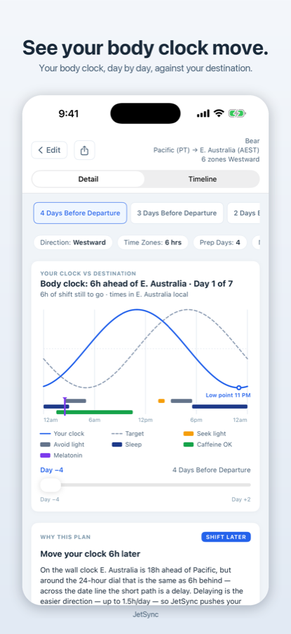
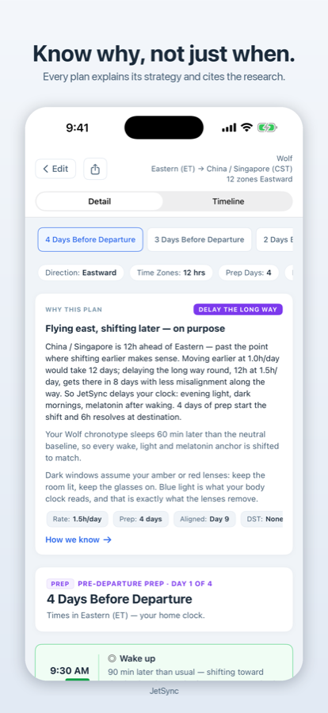

JetSync: Travel & Recovery
A day-by-day jet lag plan built from your chronotype and your route, with a graph of your body clock moving toward the destination and the reason behind every step.
Download on the App Store
Free. No account, no subscription, no ads, no analytics. iPhone and iPad (iOS 17 or later), Apple Watch (watchOS 10 or later).


What it does
- A plan computed for your trip. Every protocol comes from circadian phase-response curves, calibrated to your chronotype, your direction of travel, your departure time and the real hour-by-hour offset, daylight-saving changes included.
- See your body clock move. A graph of your internal clock against the destination, updated each day as you follow the light, dark, melatonin, caffeine and sleep windows.
- Know why. A "Why this plan" card explains the strategy in plain words (shift earlier, shift later, or delay the long way round) and cites the research behind it.
- Plans around your glasses. Own amber or red blue-blocking glasses? Turn on Lenses and every dark window becomes a glasses-on window, with exact times to put them on and take them off.
- Recover on purpose. Recovery mode handles a rough night, a weekend that slid late, or social jet lag with a sleep-pressure-vs-alertness chart and a timed coffee nap. No flight required.
- On your wrist and your Lock Screen. The next window shows on Apple Watch and as a Live Activity. Export any plan as a PDF or to your calendar.
Built on research
JetSync cites eleven peer-reviewed papers inside the app, among them Eastman & Burgess (2009) on direction-specific light and melatonin timing, Burgess et al. (2010) on low-dose melatonin as a clock-shifter, Borbély (1982) and Daan, Beersma & Borbély (1984) on the two-process model behind every recovery plan, Lockley, Brainard & Czeisler (2003) on blue light as the primary reset signal, and Hayashi, Masuda & Hori (2003) on the coffee nap.
JetSync is timing guidance, not medical advice. If you have a sleep disorder, talk to a doctor.
Private by design
Plans compute on your device. JetSync makes no network calls, has no servers, no account, and collects nothing. It works on the plane. Details in the privacy policy.
Support
Questions or bugs: open an issue or email topshelftahoe@icloud.com.